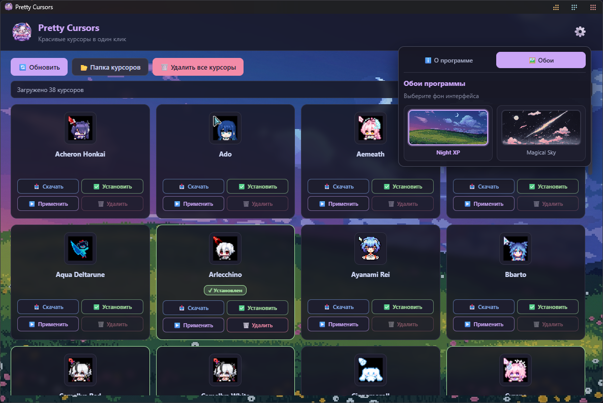

★ красивые курсоры для windows в один клик ★
Pretty Cursors — менеджер курсоров для Windows.
Позволяет устанавливать, применять и удалять кастомные курсоры
(аниме, игры и т.д.) без ручного копания в реестре и папке
C:\Windows\Cursors.
Всё, что нужно — нажать одну кнопку.

★ так выглядит Pretty Cursors ★
Курсоры качаются с GitHub и кэшируются локально.
Распаковка .7z и копирование .cur/.ani в C:\Windows\Cursors.
Мгновенная смена курсора без перезагрузки.
По одному или все сразу, с возвратом стандартного курсора.
Встроенные темы интерфейса: Night XP и Magical Sky.
Как работает приложение — прямо в меню настроек.
| Действие | Что происходит |
|---|---|
| Скачать | .7z-архив качается с raw.githubusercontent.com в extreme_data/cursors_cache/ |
| Установить | Архив распаковывается через Utils/7z.exe во временную папку, файлы .cur/.ani копируются в C:\Windows\Cursors\<имя>\ |
| Применить | Пути прописываются в HKCU\Control Panel\Cursors, изменения применяются через SystemParametersInfo(SPI_SETCURSORS) |
| Удалить | Папка курсора удаляется, кэш-архив стирается |
| Удалить все | Сначала возвращается стандартный курсор Windows, затем удаляются только папки известных курсоров |
| Обновить | Перечитывается assets/cursors.json |
C:\Windows\Cursors. При запуске без прав будет
предложен перезапуск с UAC.
Pretty-Cursors-Setup-1.0.0.exe из раздела Releases.# 1. Клонировать репозиторий
git clone https://github.com/anton18-png/Pretty-Cursors.git
cd Pretty-Cursors
# 2. Установить зависимости
npm install
# 3. Запустить в режиме разработки
npm start
# 4. Собрать установщик
npm run build
После сборки готовый установщик появится в
dist/Pretty-Cursors-Setup-1.0.0.exe.
Pretty-Cursors/
├── assets/
│ ├── backgrounds/
│ │ ├── night_xp.png # дефолтные обои
│ │ └── magical_sky.png
│ ├── cursor_icons/ # превью курсоров
│ ├── cursors.json # список курсоров
│ ├── icon.ico # иконка приложения
│ ├── logo.png # логотип
│ └── notnet.png # фон error.html
├── Utils/
│ └── 7z.exe # распаковщик .7z
├── main.js # главный процесс
├── preload.js # мост IPC
├── index.html # главное окно
├── error.html # экран «нет сети»
├── app.js # логика UI
├── main.css
├── error.css
└── package.jsonПроект распространяется под лицензией Creative Commons Attribution-NonCommercial 4.0 (CC BY-NC 4.0).
Полный текст — в файле LICENSE.
Anton18-PNG
GitHub: @anton18-png
Репозиторий: Pretty-Cursors